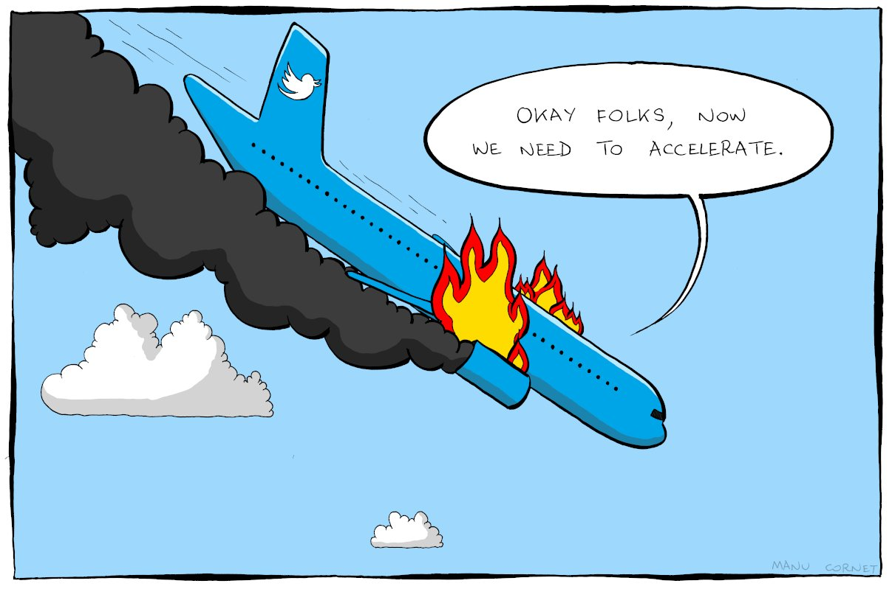
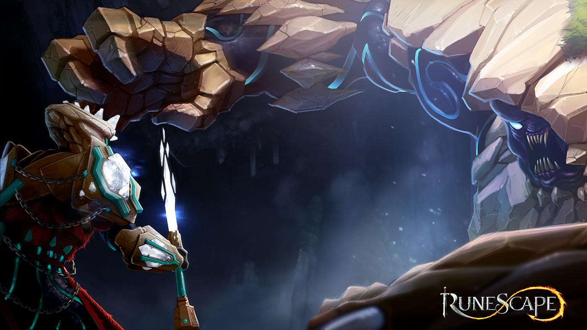

This project revolves around these 2 questions of how to compare the performance of a given airline when it uses Twitter
as a communication channel, and the assigned to us airline wishes to how good the Twitter team is in helping out its
customers particularly in comparison to the competitor airline.
Besides all of the above find weak points of the company, obtain methods by which other companies do it better
and give them advice or a ready solution from their competitor on how to solve them.


Using modified Armed Conflict Location & Event Data Project dataset collected after the outbreak of the Russo-Ukranian conflict, in order to gather statistics related to the conflict.

Cleaning up the given data from mistakes and outliers and ordering it in order to use it to gain more insights about the economy of RuneScape, and which items are best bought with the available funds.

Picking weather and air quality stations all around Netherlands, and taking into account the place they are located to precisely formulate and test a hypothesis about how weather affects the spread of harmful air compounds.

In process

In process
In process